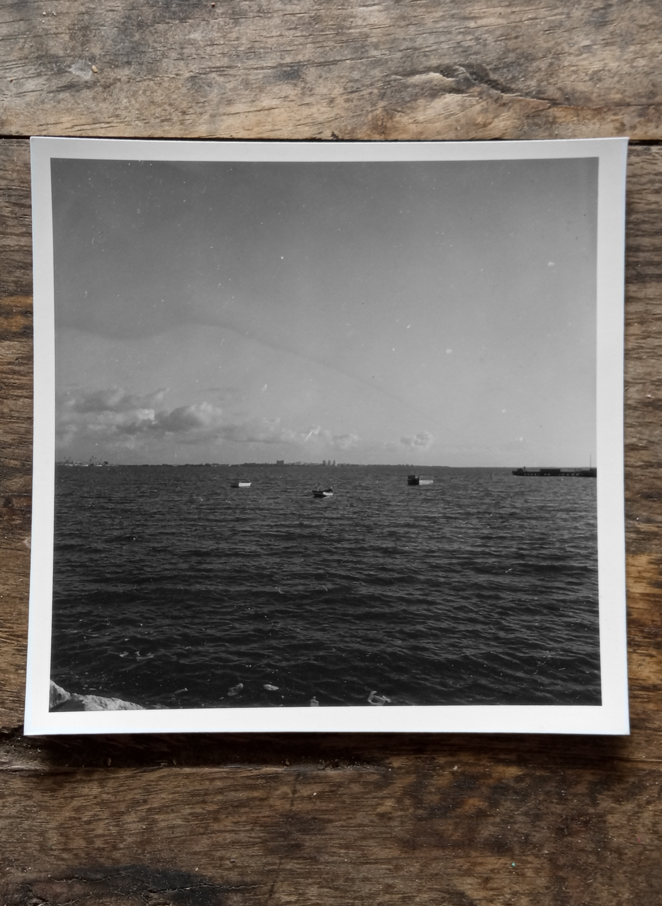
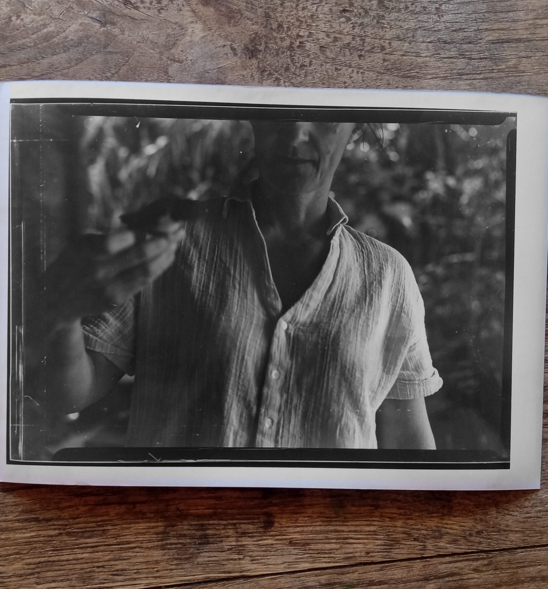

Every once in a while we change the orientation of the living room table. It's a busy table, to move it on its axis by 90 degrees requires some tidying and sorting first. Some objects that are on the table might be totally out of place when reoriented. When I spot these I put them aside lest such an infraction be materialized. A lot depends on the success of the operation, in its least a new space will be gained, at most a new era will have begun. So yes, I had enough, something had to be done and to take a real shape so that it could not be denied. And now all hopes are up, and I have accomplices too. I find it easy to get family members implicated. I am not sure if that is a general rule for families but they do tend to jump into things with me, perhaps I am very convincing or too sure of myself or really bad at expressing my doubts. The bench was moved against the window and the table turned, the spaces around had to be equalized, the curtains drawn. Every situation has its advantages of course, we can now relax into this one. We said it was only a try but not one of us is strong enough to bear another transition. We will settle now, and in a few months, or a year or so, find this stagnation unbearable enough to provoke another quarter of a turn. How many revolutions the table took already? we lost count.

I remember him sitting by this table, drinking coffee over this table, eating meals at this table, celebrating birthdays around it. I can only think of it oriented the way it is now in that context, for him to fit by it. Not that he was big, but he required certain margins. I rememeber him lowering himself down the chair, hands on the wooden handrests, slowly bending the knees, then crashing, at the point that his arms muscles failed, grace replaced by physics. He had a unique concentration when eating, totally absorbed and dedicated to the act of eating, it was a great love of his. There was the careful cutting and positioning of the pieces, the loading on spoon or fork, the slight bend of the head that with age became a suggestion, a nod, rather than a real movement, then widening the mouth as the food approached, the slow chewing and swallowing followed closely by the next cycle. I watched him fascinated, listening to the slow and experienced jaw-work with the satisfaction of a mother feeding her baby. He had always been a good boy, leaving an empty plate, but in the later years his appetite was reduced, he would stop, lay the instruments, push the plate away, and declare: "that's it, I can't fit another bite."

A handful. A handful is a good measure. It demands careful distribution, as it is just a step away from the end. Some things are done a handful of times all together, in our ignorance we rarely treat them this way. The last time around I could not park the car out of the gate, the walk to the gate was too hard for him. On our outings, out for coffee or the supermarket, I would drop him off near the destination and look for parking, then go get the car and pick him up again. Walking down the steps to the house I'd walk close behind him with my hands outstretched to catch him when he falls. All but once. I had a trunk full of shopping, "three trips down the steps", I thought and I said: "You walk down dad, I'll be just behind you". twelve seconds later stepping down I heard him call from under the bush to the side. I pulled him by his arms and helped him up. "I am getting tired of this, Sophie" I said while he was in the toilet, "You don't know how much longer he will be around" she answered. It felt like a grace period, only I didn't know that's how grace feels like, not then. - So the last time he was here the table was oriented this way - Was it? Yes you are right... - And so there was a whole period of the table oriented the other way since he was here last. - I feel like the table was the other way for a very long time. - Feels like it, but it couldn't have been that long. It washed over me, his longing for all the details of the daily news. I never understood it before, why do you need to know all that I don't care to know? ... when there is less than a handful of days left to ask, or a handful of people you care about, you might want to pile those up to cushion the fall.